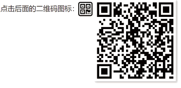
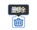
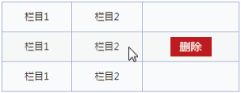
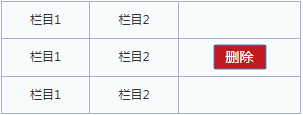

首页 > 编程笔记
CSS :focus伪类选择器用法详解
CSS :focus 是一个从 IE8 浏览器开始支持的伪类，它可以匹配当前处于聚焦状态的元素。
例如，高亮显示处于聚焦状态的 <textarea> 输入框的边框：
除上述特定元素之外，其他 HTML 元素应用 :focus 伪类是无效的，例如：
如何让普通元素也能响应 :focus 伪类呢？设置了 HTML contenteditable 属性的普通元素可以应用 :focus 伪类，例如：
设置了 HTML tabindex 属性的普通元素也可以应用 :focus 伪类，例如，下面 3 种写法都是可以的：
既然普通元素也可以响应 :focus 伪类，是不是可以利用这种特性实现任意元素的点击下拉效果呢？
如果纯展示下拉内容，无交互效果是可以的，例如，实现点击二维码图标时显示完整二维码图片的交互效果：
但实际上，使用 :focus 控制元素的显隐并不完美，在 iOS Safari 浏览器下，元素一旦处于 focus 状态，除非点击其他可聚焦元素来转移 focus 焦点，否则这个元素会一直保持 focus 状态。各个桌面浏览器、Android 浏览器均无此问题。不过这个问题也好解决，只需要对祖先容器元素设置 tabindex="-1"，同时取消该元素的 outline 样式，代码示意如下：
但这个方法只适用于纯展示的下拉效果，如果下拉浮层内部有其他交互效果，此方法就有问题，要么失焦，要么焦点转移，都会导致下拉浮层的消失。遇到这种场景，可以使用整体焦点伪类 :focus-within。
最后强调一点，一个页面最多有一个焦点元素，这就意味着一个页面最多只会有一个元素响应 :focus 伪类样式。
于是就有人想到将 outline 重置为 none，其出发点是好的，也是可以理解的，但是结果是糟糕的，既没必要，又带来了不良的用户体验。
说没必要是因为所有浏览器都已经优化了控件元素的 outline 交互体验，也就是点击链接或按钮时不会有轮廓，只有键盘访问时才会有。
说不良的用户体验，指的是一旦设置了 outline:none，这些控件元素再也无法使用键盘进行无障碍访问。这是由于在默认情况下，当用户使用 Tab 键或者方向键遍历链接和按钮元素的时候，会让这些元素处于 focus 状态，同时触发 outline 样式的渲染，要么是外发光效果，要么是虚框效果，但是如果这些元素的 outline 轮廓被清除，那么用户使用键盘访问网页的时候，根本无法知道现在到底哪个元素处于 focus 状态，从而迷失在页面上，这是极其糟糕的用户体验。
有人可能会说：“我也不想重置 outline 属性，但是浏览器默认的轮廓效果太难看了，达不到产品和设计要求啊”。实际上，不是说 outline 属性不能重置，而是一定要确保元素匹配 :focus 伪类的时候有明显的样式变化。
例如，如果希望聚焦表单输入框的时候呈现的不是黑色边框或外发光效果，而是边框高亮显示，则可以：
但是 <span> 或者 <div> 按钮是没有上面这些行为的，如果要支持这些比较好的原生特性，要么需要额外的 JavaScript 代码，要么需要额外的 HTML 属性设置。例如，tabindex="0" 支持 Tab 键索引，role="button" 支持屏幕阅读器识别等。
总之，使用 <span> 或者 <div> 模拟按钮的 UI 效果是一件高成本低收益的事情，不到万不得已，没有使用 <span> 或者 <div> 模拟按钮的理由。如果你认为按钮本身的兼容性不够好，可以使用 <label> 元素模拟，使用 for 属性进行关联，例如：
以 [type="checkbox"] 复选框为例：
关键 CSS 代码如下：
① 对于原生复选框元素的隐藏，要么设置透明度 opacity:0，要么剪裁，千万不要使用 visibility:hidden 或者 display:none 进行隐藏，虽然 IE9 及以上版本的浏览器的功能是正常的，但是这两种隐藏是无法被键盘聚焦，键盘不可访问。
② 不要忘记在原生复选框聚焦的时候高亮显示自定义的输入框元素，可以是边框高亮，或者外发光，通常都使用相邻兄弟选择符（+）实现，特殊情况下也可以使用兄弟选择符（~），如高亮多个元素时。
市面上有不少 UI 框架，如何区分品质？很简单，使用 Tab 键索引页面元素，如果输入框有高亮显示，则这个 UI 框架比较专业，如果什么反应都没有，建议换一种 UI 框架。
这里再介绍另一种非常容易被忽略的影响用户体验的交互实现。
为了版面的整洁，列表中的操作按钮默认会隐藏，当鼠标光标经过列表的时候才显示，如下图所示。
很多人在实现的时候并没有考虑很多，直接使用 display:none 隐藏或者 visibility: hidden 隐藏，结果导致无法通过键盘使隐藏的控件元素显示，因为这两种隐藏方式会使元素无法被聚焦，如何应对这种情况呢？
可以试试使用 opacity（透明度）控制内容的显隐，这样就可以通过 :focus 伪类使按钮在被键盘聚焦的时候可见，例如：
例如，高亮显示处于聚焦状态的 <textarea> 输入框的边框：
textarea {
border: 1px solid #ccc;
}
textarea:focus {
border-color: HighLight;
}
这样的方式相信大家都用过，接下来深入介绍相关知识。:focus伪类匹配机制
与 :active 伪类不同，:focus 伪类默认只能匹配特定的元素，包括：- 非 disabled 状态的表单元素，如 <input> 输入框、<select> 下拉框、<button> 按钮等；
- 包含 href 属性的 <a> 元素；
- <area> 元素，不过可以生效的 CSS 属性有限；
- HTML5 中的 <summary> 元素。
除上述特定元素之外，其他 HTML 元素应用 :focus 伪类是无效的，例如：
body:focus {
background-color: skyblue;
}
此时点击页面，<body> 元素不会有背景色的变化（IE 浏览器的表现有问题，请忽略），虽然此时的 document.activeElement 就是 <body> 元素。如何让普通元素也能响应 :focus 伪类呢？设置了 HTML contenteditable 属性的普通元素可以应用 :focus 伪类，例如：
<div contenteditable="true></div> <div contenteditable="plaintext-only"></div>因为此时 <div> 元素是一个类似 <textarea> 元素的输入框。
设置了 HTML tabindex 属性的普通元素也可以应用 :focus 伪类，例如，下面 3 种写法都是可以的：
<div tabindex="-1">内容</div> <div tabindex="0">内容</div> <div tabindex="1">内容</div>如果期望 <div> 元素可以被 Tab 键索引，且被点击的时候可以触发 :focus 伪类样式，则使用 tabindex="0"；如果不期望 <div> 元素可以被 Tab 键索引，且只在它被点击的时候触发 :focus 伪类样式，则使用 tabindex="-1"。对于普通元素，不存在使用自然数作为 tabindex 属性值的场景。
既然普通元素也可以响应 :focus 伪类，是不是可以利用这种特性实现任意元素的点击下拉效果呢？
如果纯展示下拉内容，无交互效果是可以的，例如，实现点击二维码图标时显示完整二维码图片的交互效果：
<img src="icon-qrcode.svg" tabindex="0">
<img class="img-qrcode" src="qrcode.png">
.img-qrcode {
position: absolute;
display: none;
}
:focus + .img-qrcode {
display: inline;
}
点击小图标，二维码图片会显示（如下图所示），点击空白处，图片又会隐藏，这正是我们需要的效果。

图 1 点击小图标显示二维码图片
图 1 点击小图标显示二维码图片
但实际上，使用 :focus 控制元素的显隐并不完美，在 iOS Safari 浏览器下，元素一旦处于 focus 状态，除非点击其他可聚焦元素来转移 focus 焦点，否则这个元素会一直保持 focus 状态。各个桌面浏览器、Android 浏览器均无此问题。不过这个问题也好解决，只需要对祖先容器元素设置 tabindex="-1"，同时取消该元素的 outline 样式，代码示意如下：
<body>
<div class="container" tabindex="-1"></div>
</body>
.container {
outline: 0 none;
}
这样，点击二维码图标以外的元素时就会把焦点转移到 .container 元素上，iOS Safari 浏览器的交互就表现正常了。如果在使用 JavaScript 进行开发的时候遇到 iOS Safari 浏览器不触发 blur 事件的问题，也可以用这种方法解决。需要注意的是，tabindex="-1" 设置在 <body> 元素上是无效的。但这个方法只适用于纯展示的下拉效果，如果下拉浮层内部有其他交互效果，此方法就有问题，要么失焦，要么焦点转移，都会导致下拉浮层的消失。遇到这种场景，可以使用整体焦点伪类 :focus-within。
最后强调一点，一个页面最多有一个焦点元素，这就意味着一个页面最多只会有一个元素响应 :focus 伪类样式。
:focus伪类与outline轮廓
先来看看下面这样糟糕的样式代码：
* { outline: 0 none; }
或者
a { outline: 0 none; }
在多年前的 IE 浏览器时代，点击任意链接或者按钮时都会出现一个虚框轮廓，影响美观。在 Chrome 浏览器下，当设置了背景的 <button> 元素、<summary> 元素以及设置了 tabindex 属性的普通元素被点击的时候，也会显示浏览器默认的外发光轮廓（现在的 Chrome 浏览器已经修改了这个交互设计）。于是就有人想到将 outline 重置为 none，其出发点是好的，也是可以理解的，但是结果是糟糕的，既没必要，又带来了不良的用户体验。
说没必要是因为所有浏览器都已经优化了控件元素的 outline 交互体验，也就是点击链接或按钮时不会有轮廓，只有键盘访问时才会有。
说不良的用户体验，指的是一旦设置了 outline:none，这些控件元素再也无法使用键盘进行无障碍访问。这是由于在默认情况下，当用户使用 Tab 键或者方向键遍历链接和按钮元素的时候，会让这些元素处于 focus 状态，同时触发 outline 样式的渲染，要么是外发光效果，要么是虚框效果，但是如果这些元素的 outline 轮廓被清除，那么用户使用键盘访问网页的时候，根本无法知道现在到底哪个元素处于 focus 状态，从而迷失在页面上，这是极其糟糕的用户体验。
有人可能会说：“我也不想重置 outline 属性，但是浏览器默认的轮廓效果太难看了，达不到产品和设计要求啊”。实际上，不是说 outline 属性不能重置，而是一定要确保元素匹配 :focus 伪类的时候有明显的样式变化。
例如，如果希望聚焦表单输入框的时候呈现的不是黑色边框或外发光效果，而是边框高亮显示，则可以：
textarea:focus {
outline: 0 none;
border-color: HighLight;
}
在实际开发过程中，难免会遇到需要模拟浏览器原生聚焦轮廓的场景，Chrome 浏览器下是外发光或者黑色粗轮廓（取决于操作系统和浏览器的版本），IE 浏览器和 Firefox 浏览器下则是虚点。理论上，使用如下 CSS 代码是最准确的：
:focus {
outline: 1px dotted;
outline: 5px auto -webkit-focus-ring-color;
}
对于一些小图标，可能会设置 color:transparent，还有一些按钮的文字颜色稍浅，这会导致 IE 浏览器和 Firefox 浏览器下虚框轮廓不可见，因此，在实际开发的时候，建议指定虚线颜色：
:focus {
outline: 1px dotted HighLight;
outline: 5px auto -webkit-focus-ring-color;
}
CSS:focus伪类与键盘无障碍访问
:focus 伪类与键盘无障碍访问密切相关，因此，实际上需要使用 :focus 伪类的场景比预想的多。1) 为什么不建议使用 <span> 或 <div> 按钮
<span> 元素或者 <div> 元素也能模拟按钮的 UI 效果，但并不建议使用。一来原生的 <button> 元素可以触发表单提交行为，使表单可以原生支持 Enter 键；二来原生的 <button> 元素天然可以被键盘聚焦，确保我们的页面可以纯键盘无障碍访问。但是 <span> 或者 <div> 按钮是没有上面这些行为的，如果要支持这些比较好的原生特性，要么需要额外的 JavaScript 代码，要么需要额外的 HTML 属性设置。例如，tabindex="0" 支持 Tab 键索引，role="button" 支持屏幕阅读器识别等。
总之，使用 <span> 或者 <div> 模拟按钮的 UI 效果是一件高成本低收益的事情，不到万不得已，没有使用 <span> 或者 <div> 模拟按钮的理由。如果你认为按钮本身的兼容性不够好，可以使用 <label> 元素模拟，使用 for 属性进行关联，例如：
<input id="submit" type="submit">
<label class="button" for="submit">提交</label>
[type="submit"] {
position: absolute;
clip: rect(0 0 0 0);
}
.button {
/* 按钮样式... */
}
/* focus轮廓转移 */
:focus + .button {
outline: 1px dotted HighLight;
outline: 5px auto -webkit-focus-ring-color;
}
使用 <label> 元素模拟按钮的效果既保留了语义和原生行为，视觉上又完美兼容。2) 模拟表单元素的键盘可访问性
[type="radio"]、[type="checkbox"]、[type="range"] 类型的 <input> 元素的 UI 往往不符合网站的设计风格，需要自定义样式，常规实现一般都没问题，关键是很多开发人员会忘了键盘的无障碍访问。以 [type="checkbox"] 复选框为例：
<input id="checkbox" type="checkbox"> <label class="checkbox" for="checkbox">提交</label>我们需要隐藏原生的 [type="checkbox"] 复选框，使用关联的 <label> 元素自定义的复选框样式（如果不需要兼容 IE 和 IE Edge 浏览器，则无须 <label> 元素模拟）。
关键 CSS 代码如下：
[type="checkbox"] {
position: absolute;
clip: rect(0 0 0 0);
}
.checkbox {
border: 1px solid gray;
}
/* 聚焦时记得高亮显示自定义输入框 */
:focus + .checkbox {
border-color: skyblue;
}
这类自定义实现有两个关键点：① 对于原生复选框元素的隐藏，要么设置透明度 opacity:0，要么剪裁，千万不要使用 visibility:hidden 或者 display:none 进行隐藏，虽然 IE9 及以上版本的浏览器的功能是正常的，但是这两种隐藏是无法被键盘聚焦，键盘不可访问。
② 不要忘记在原生复选框聚焦的时候高亮显示自定义的输入框元素，可以是边框高亮，或者外发光，通常都使用相邻兄弟选择符（+）实现，特殊情况下也可以使用兄弟选择符（~），如高亮多个元素时。
市面上有不少 UI 框架，如何区分品质？很简单，使用 Tab 键索引页面元素，如果输入框有高亮显示，则这个 UI 框架比较专业，如果什么反应都没有，建议换一种 UI 框架。
3) 容易忽略的鼠标光标经过行为的键盘可访问性
键盘的可访问性在介绍 :hover 伪类的时候提过，需要同时设置 :focus 伪类来提高键盘的可访问性，如图 2 所示。

图 2 设置:focus伪类以增强键盘的可访问性
图 2 设置:focus伪类以增强键盘的可访问性
这里再介绍另一种非常容易被忽略的影响用户体验的交互实现。
为了版面的整洁，列表中的操作按钮默认会隐藏，当鼠标光标经过列表的时候才显示，如下图所示。

图 3 鼠标光标经过时显示列表按钮
图 3 鼠标光标经过时显示列表按钮
很多人在实现的时候并没有考虑很多，直接使用 display:none 隐藏或者 visibility: hidden 隐藏，结果导致无法通过键盘使隐藏的控件元素显示，因为这两种隐藏方式会使元素无法被聚焦，如何应对这种情况呢？
可以试试使用 opacity（透明度）控制内容的显隐，这样就可以通过 :focus 伪类使按钮在被键盘聚焦的时候可见，例如：
tr .button {
opacity: 0;
}
tr:hover .button,
tr .button:focus {
opacity: 1;
}
效果如下图所示。

图 4 focus时也能显示列表按钮
图 4 focus时也能显示列表按钮
关注公众号「站长严长生」，在手机上阅读所有教程，随时随地都能学习。内含一款搜索神器，免费下载全网书籍和视频。

微信扫码关注公众号